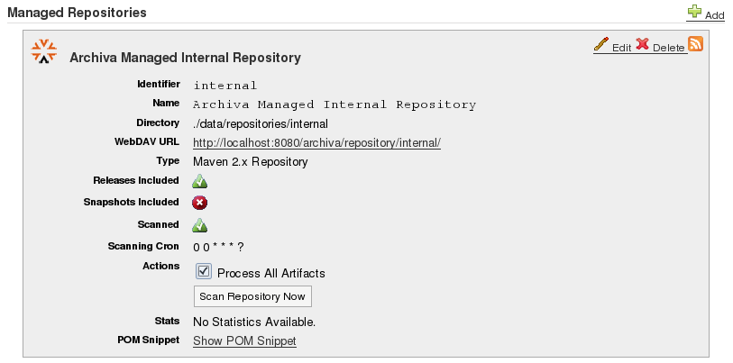

Archiva has two types of repository configuration: managed repository and remote repository.
A managed repository is a repository which resides locally to the server where Archiva is running. It could serve as a proxy repository, an internal deployment repository or a local mirror repository.
Managed repository fields:
Each repository has its own Webdav url. This allows the user to browse and access the repository via webdav. The url has the following format:
http://[URL TO ARCHIVA]/repository/[REPOSITORY ID] (e.g. http://localhost:8080/archiva/repository/releases).
A pom snippet is also available for each repository. The <distributionManagement> section can be copied and pasted into a project's pom to specify that the project will be deployed in that managed repository. The <repositories> section on the other hand, can be copied and pasted to a project's pom.xml or to Maven's settings.xml to tell Maven to get artifacts from the managed repository when building the project.
A remote repository is a repository which resides remotely. These repositories are usually the proxied repositories. See Proxy Connectors on how to proxy a repository.
Remote repository fields:
Repository scan can be executed on schedule or it can be explicitly executed by clicking the 'Scan Repository Now' button in the repositories page. By default, Archiva only processes new artifacts in the repository with respect to the last run of the repository scanner. Meaning that if the artifact's last modified date is newer than the last repository scan, then the artifact will be processed. Otherwise, it will be skipped. You can override this behavior and force Archiva to process all artifacts regardless of its age by ticking the 'Process All Artifacts' checkbox in the repositories page and clicking the 'Scan Repository Now' button.
For every artifact found by the repository scanner, processing is done on this artifact by different consumers. Examples of the processing done are: indexing, repository purge and database update. Details about consumers are available in the Consumers page.
Repository purge is the process of cleaning up the repository of old snapshots. When deploying a snapshot to a repository, Maven deploys the project/artifact with a timestamped version. Doing daily/nightly builds of the project then tends to bloat the repository. What if the artifact is large? Then disk space will definitely be a problem. That's where Archiva's repository purge feature comes in. Given a criteria to use -- by the number of days old and by retention count, it would clean up the repository by removing old snapshots.
Please take note that the by number of days old criteria is activated by default (set to 100 days). In order to de-activate it and use the by retention count criteria, you must set the Repository Purge By Days Older field to 0. Another thing to note here is that if the by number of days old criteria is activated, the retention count would still be respected (See the Repository Purge By Days Older section below for more details) but not the other way around.
Let's take a look at different behaviours for repository purge using the following scenario:
Artifacts in the repository: ../artifact-x/2.0-SNAPSHOT/artifact-x-20061118.060401-2.jar ../artifact-x/2.0-SNAPSHOT/artifact-x-20061118.060401-2.pom ../artifact-x/2.0-SNAPSHOT/artifact-x-20070113.034619-3.jar ../artifact-x/2.0-SNAPSHOT/artifact-x-20070113.034619-3.pom ../artifact-x/2.0-SNAPSHOT/artifact-x-20070203.028902-4.jar ../artifact-x/2.0-SNAPSHOT/artifact-x-20070203.028902-4.pom
Using this criteria for the purge, Archiva will check how old an artifact is and if it is older than the set value in the repository purge by days older field, then the artifact will be deleted respecting the retention count of course.
If repository purge by days older is set to 100 days (with repository purge by retention count field set to 1), and the current date is let's say 03-01-2007, given the scenario above.. the following artifacts will be retained: artifact-x-20070113.034619-3.jar, artifact-x-20070113.034619-3.pom, artifact-x-20070203.028902-4.jar and artifact-x-20070203.028902-4.pom. It is clear in the version timestamps that these 4 artifacts are not more than 100 days old from the current date (which is 03-01-2007 in our example) so they are all retained. In this case the retention count doesn't have any effect since the priority is the age of the artifact.
Now, if the repository purge by days older is set to 30 days (with repository purge by retention count field still set to 1) and the current date is still 03-01-2007, then given the same scenario above.. only the following artifacts will be retained: artifact-x-20070203.028902-4.jar and artifact-x-20070203.028902-4.pom. In this case, we can see that the retained artifacts are still not older by the number of days set in the repository purge by days older field and the retention count is still met.
Now, let's set the repository purge by days older to 10 days (with repository purge by retention count field still set to 1) and the current date is still 03-01-2007, then still given the same repository contents above.. the following artifacts will still be retained: artifact-x-20070203.028902-4.jar and artifact-x-20070203.028902-4.pom. It is clear from the version timestamps that the artifacts ARE MORE THAN the repository purge by days older value, which is 10 days. Why is it still retained? Recall the value of the repository purge by retention count -- 1 :) This ensures that there is ALWAYS 1 artifact timestamped version retained for every unique version snapshot directory of an artifact.
If the repository purge by retention count field is set to 2, then only the artifacts artifact-x-20070113.034619-3.jar, artifact-x-20070113.034619-3.pom, artifact-x-20070203.028902-4.jar and artifact-x-20070203.028902-4.pom will be retained in the repository. The oldest snapshots will be deleted maintaining only a number of snapshots equivalent to the set retention count (regardless of how old or new the artifact is).
You can also configure Archiva to clean up snapshot artifacts that have already been released. This can be done by ticking the Delete Released Snapshots checkbox in the Repository Configuration form.
Once this feature is enabled, if Archiva encounters a snapshot artifact during repository scanning, it would check all the repositories configured for a released version of that snapshot. If it finds one, then it would delete the entire snapshot version directory.
It should be noted that this feature is entirely separate from the repository purge by number of days older and by retention count.
Another scanning process also occurs in Archiva, the database scanning. Same as with repository scanning, it can also be executed on schedule or explicitly. This can be configured in the 'Database' page, via the 'Database - Unprocessed Artifacts Scanning' section.
It is essential that the database scan occur after the repo scan as this is where the pom information of the artifacts in the database will be processed by the consumers and in turn, added to the database (as ArchivaProjectModel objects). For more details about the different database consumers, please see the Consumers page.